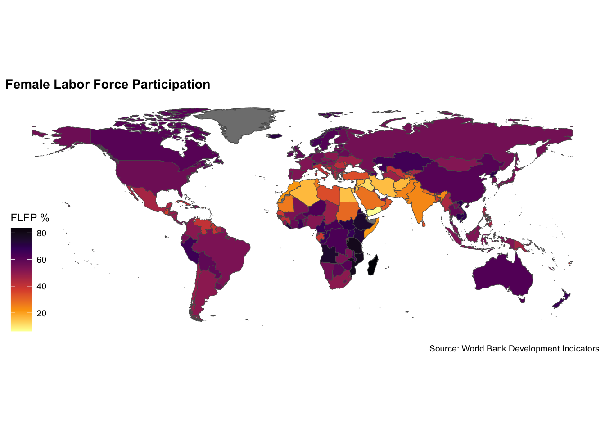
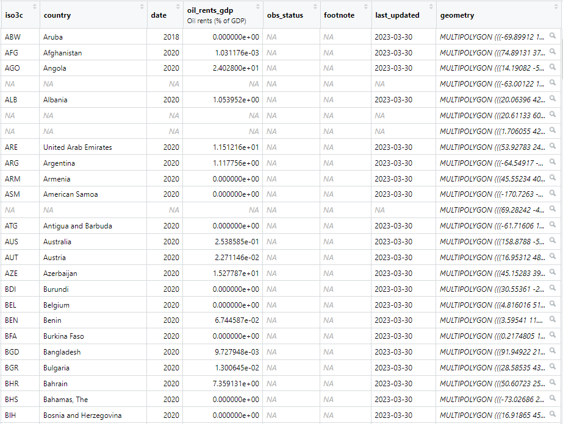
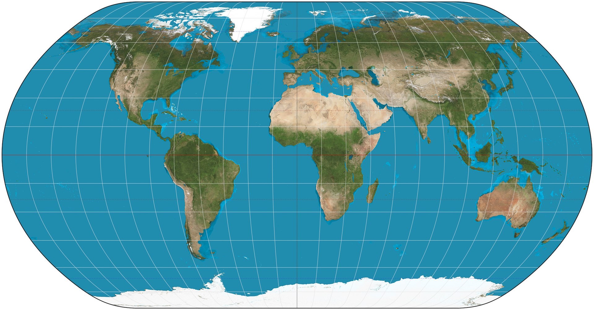
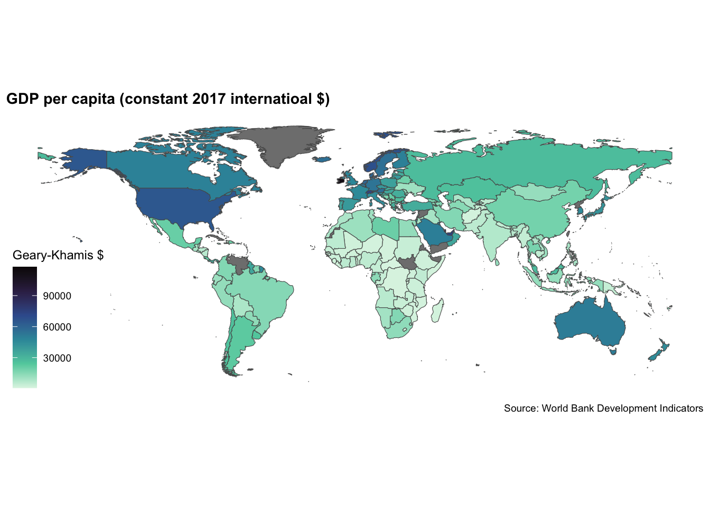
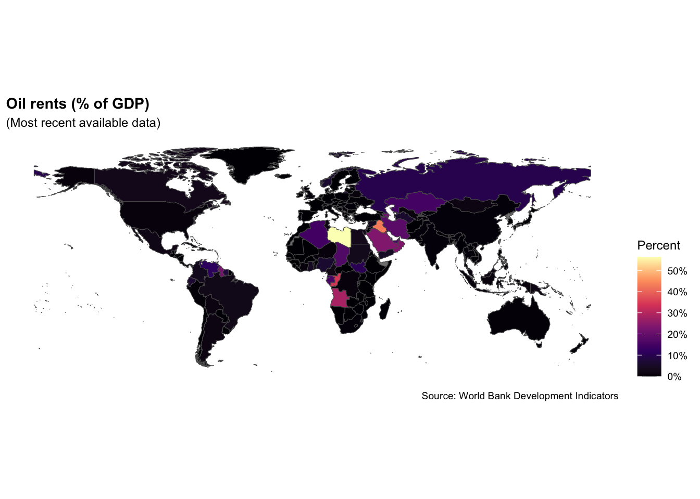

Choropleth Maps
Choropleth Map
Simple Features

Mercator Projection

Natural Earth Projection

Disputed Territory

Development

Map Code
Grab country shapes with ne_countries()
library(rnaturalearth)
library(dplyr)
world_map_df <- ne_countries(scale = "medium", returnclass = "sf") |>
filter(name != "Antarctica") # remove Antarctica
#world_map_df |>
#glimpse()
# view contents of geometry column
world_map_df |>
select(geometry) Map Code
Make a map using geom_sf() from ggplot2.
library(ggplot2)
ggplot(data = world_map_df) +
geom_sf(aes(fill = income_grp)) +
labs(title = "World Bank country income categories")Map Code
Add a color scale and a theme.
library(ggthemes)
ggplot(data = world_map_df) +
geom_sf(aes(fill = income_grp)) +
labs(
title = "World Bank country income categories",
fill = "Category"
) +
scale_fill_viridis_d() +
theme_map() Your Turn!
- Make a map of WB income categories
- Start by grabbing the country shapes
- Store data frame in an object
- Use
geom_sf()to make the map - Style the map
05:00
Map Other Data

Map Other Data
Grab data from the WB, join with country shapes…
library(wbstats)
oil_rents_df <- wb_data(c(oil_rents_gdp = "NY.GDP.PETR.RT.ZS"), mrnev = 1)
rents_map_df <- left_join(world_map_df, oil_rents_df, join_by(iso_a3 == iso3c))
rents_map_df |>
select(last_col(5):last_col()) |> #select last 5 columns of df
glimpse() Map Other Data
ggplot(data = rents_map_df) +
geom_sf(aes(fill = oil_rents_gdp)) + # shade based on oil rents
labs(
title = "Oil rents (% of GDP)",
subtitle = "(Most recent available data)", # add subtitle
fill = "Percent",
caption = "Source: World Bank Development Indicators"
) +
theme_map() +
theme(
legend.position = "right",
#legend.title = element_text(size = 8),
#legend.text = element_text(size = 6)
plot.title = element_text(face = "bold"), # move legend
) +
scale_fill_viridis_c( # chg from discrete (_d) to continuous (_c)
option = "magma", # chg to magma theme
labels = scales::label_percent(scale = 1) # add % label for legend
) Your Turn!
- Using the code from module 3.1 as a template…
- Try mapping a favorite variable from the World Bank
- First, download the relevant data using
wbstats - Then merge it with your country shapes
- Map using
geom_sf() - Beautify your map!
10:00
Map Some V-Dem Data
- Now try mapping some V-Dem data
- Remind yourself of how to download data from V-Dem
- You will have to convert country codes to iso3c
- Then merge with country shapes
- Then map your V-Dem indicator!
10:00
Coding With AI
- Sometimes coding with AI can helpful
- Sometimes not!
- Try prompting ChatGPT to code up a choropleth map
- Tell it what packages to use
- See how it does and note what it does differently relative to humans
- Then debug the code
10:00